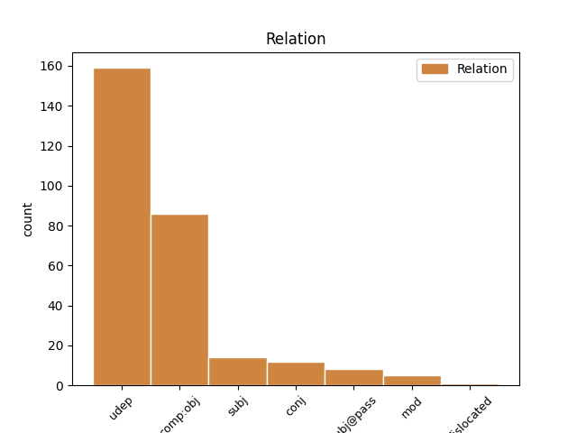
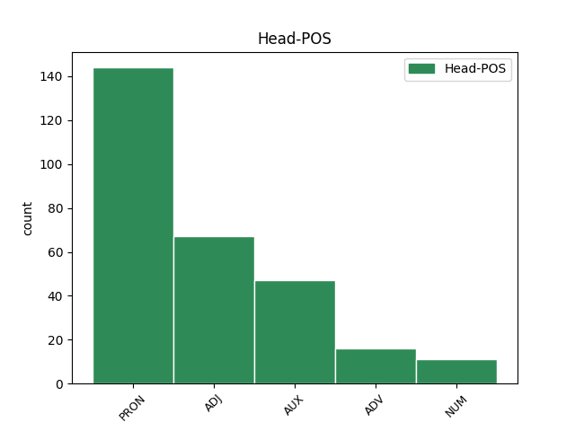
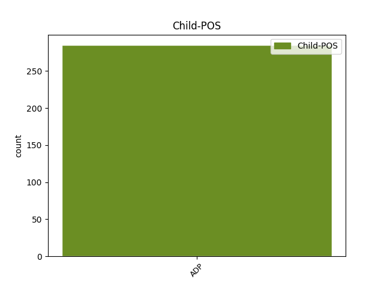

Distribution of features within this leaf



Agreement Rules sorted by frequency.
- When the dependent token is the direct object complements(comp:obj) of the head token, and the head token is ADP and the dependent token is PRON.
1 चीनी _ _ _ _ 0 _ _ _
2 प्रधानमंत्री _ _ _ _ 0 _ _ _
3 वेन _ _ _ _ 0 _ _ _
4 जियाबाओ _ _ _ _ 0 _ _ _
5 की _ _ _ _ 0 _ _ _
6 भारत _ _ _ _ 0 _ _ _
7 यात्रा _ _ _ _ 0 _ _ _
8 से _ _ _ _ 0 _ _ _
9 पहले _ _ _ _ 0 _ _ _
10 निर्वासित _ _ _ _ 0 _ _ _
11 तिब्बती _ _ _ _ 0 _ _ _
12 आध्यात्मिक _ _ _ _ 0 _ _ _
13 नेता _ _ _ _ 0 _ _ _
14 दलाई _ _ _ _ 0 _ _ _
15 लामा _ _ _ _ 0 _ _ _
16 ने _ _ _ _ 0 _ _ _
17 कहा _ _ _ _ 0 _ _ _
18 है _ _ _ _ 0 _ _ _
19 कि _ _ _ _ 0 _ _ _
20 चीनी _ _ _ _ 0 _ _ _
21 और _ _ _ _ 0 _ _ _
22 तिब्बती _ _ _ _ 0 _ _ _
23 एक _ _ _ _ 0 _ _ _
24 - _ _ _ _ 0 _ _ _
25 दूसरे दूसरा PRON PRP Case=Acc|Number=Sing|Person=3|PronType=Prs 26 comp:obj _ ChunkId=NP5|ChunkType=head|Tam=0|Translit=dūsare|Vib=0_का
26 की का ADP PSP AdpType=Post|Case=Acc|Gender=Fem|Number=Sing 0 _ _ _
27 सांस्कृतिक _ _ _ _ 0 _ _ _
28 विशिष्टता _ _ _ _ 0 _ _ _
29 का _ _ _ _ 0 _ _ _
30 आदर _ _ _ _ 0 _ _ _
31 करते _ _ _ _ 0 _ _ _
32 हैं _ _ _ _ 0 _ _ _
33 । _ _ _ _ 0 _ _ _
1 इसके _ _ _ _ 0 _ _ _
2 अलावा _ _ _ _ 0 _ _ _
3 चंडीगढ़ _ _ _ _ 0 _ _ _
4 के _ _ _ _ 0 _ _ _
5 विभिन्न _ _ _ _ 0 _ _ _
6 लोग _ _ _ _ 0 _ _ _
7 भी _ _ _ _ 0 _ _ _
8 पाकिस्तानी _ _ _ _ 0 _ _ _
9 दर्शकों _ _ _ _ 0 _ _ _
10 को _ _ _ _ 0 _ _ _
11 अपने अपना PRON PRP Case=Nom|Gender=Masc|PronType=Prs 12 mod _ ChunkId=NP5|ChunkType=head|Tam=0|Translit=apane|Vib=0
12 यहां यहाँ PRON PRP Case=Nom|PronType=Prs 0 _ _ _
13 ठहरा _ _ _ _ 0 _ _ _
14 रहे _ _ _ _ 0 _ _ _
15 हैं _ _ _ _ 0 _ _ _
16 । _ _ _ _ 0 _ _ _
1 ताकि _ _ _ _ 0 _ _ _
2 , _ _ _ _ 0 _ _ _
3 पर्यटन _ _ _ _ 0 _ _ _
4 के _ _ _ _ 0 _ _ _
5 दौरान _ _ _ _ 0 _ _ _
6 उन्हें _ _ _ _ 0 _ _ _
7 किसी कोई PRON PRP Case=Acc|Number=Sing|Person=3|PronType=Prs 9 subj _ ChunkId=NP3|ChunkType=child|Tam=0|Translit=kisī|Vib=0
8 तरह _ _ _ _ 0 _ _ _
9 की का ADP PSP AdpType=Post|Case=Acc|Gender=Fem|Number=Sing 0 _ _ _
10 परेशानी _ _ _ _ 0 _ _ _
11 का _ _ _ _ 0 _ _ _
12 सामना _ _ _ _ 0 _ _ _
13 न _ _ _ _ 0 _ _ _
14 करना _ _ _ _ 0 _ _ _
15 पड़े _ _ _ _ 0 _ _ _
16 । _ _ _ _ 0 _ _ _
1 गौरतलब _ _ _ _ 0 _ _ _
2 है _ _ _ _ 0 _ _ _
3 कि _ _ _ _ 0 _ _ _
4 जाहिरा _ _ _ _ 0 _ _ _
5 फास्ट _ _ _ _ 0 _ _ _
6 ट्रैक _ _ _ _ 0 _ _ _
7 कोर्ट _ _ _ _ 0 _ _ _
8 में _ _ _ _ 0 _ _ _
9 अपने अपना PRON PRP Case=Acc|Gender=Masc|PronType=Prs 10 mod _ ChunkId=NP3|ChunkType=head|Tam=0|Translit=apane|Vib=0
10 पहले पहले ADV NST AdpType=Post|Case=Acc|Gender=Masc|Number=Sing|Person=3 0 _ _ _
11 के _ _ _ _ 0 _ _ _
12 बयान _ _ _ _ 0 _ _ _
13 से _ _ _ _ 0 _ _ _
14 मुकर _ _ _ _ 0 _ _ _
15 गई _ _ _ _ 0 _ _ _
16 थी _ _ _ _ 0 _ _ _
17 । _ _ _ _ 0 _ _ _
1 लेकिन _ _ _ _ 0 _ _ _
2 वहां वहाँ PRON PRP Case=Nom|PronType=Prs 3 udep _ ChunkId=NP|ChunkType=head|Translit=vahāṁ
3 मौजूद मौजूद ADJ JJ Case=Nom 0 _ _ _
4 लोग _ _ _ _ 0 _ _ _
5 इस _ _ _ _ 0 _ _ _
6 दौरान _ _ _ _ 0 _ _ _
7 उनके _ _ _ _ 0 _ _ _
8 मुंह _ _ _ _ 0 _ _ _
9 से _ _ _ _ 0 _ _ _
10 क्षेत्र _ _ _ _ 0 _ _ _
11 के _ _ _ _ 0 _ _ _
12 विकास _ _ _ _ 0 _ _ _
13 की _ _ _ _ 0 _ _ _
14 योजनाओं _ _ _ _ 0 _ _ _
15 की _ _ _ _ 0 _ _ _
16 घोषणा _ _ _ _ 0 _ _ _
17 की _ _ _ _ 0 _ _ _
18 आस _ _ _ _ 0 _ _ _
19 लगाए _ _ _ _ 0 _ _ _
20 बैठे _ _ _ _ 0 _ _ _
21 थे _ _ _ _ 0 _ _ _
22 । _ _ _ _ 0 _ _ _
1 करदाता _ _ _ _ 0 _ _ _
2 को _ _ _ _ 0 _ _ _
3 बचत _ _ _ _ 0 _ _ _
4 खाते _ _ _ _ 0 _ _ _
5 में _ _ _ _ 0 _ _ _
6 जमा _ _ _ _ 0 _ _ _
7 10 _ _ _ _ 0 _ _ _
8 लाख _ _ _ _ 0 _ _ _
9 या _ _ _ _ 0 _ _ _
10 उससे _ _ _ _ 0 _ _ _
11 अधिक _ _ _ _ 0 _ _ _
12 की _ _ _ _ 0 _ _ _
13 रकम _ _ _ _ 0 _ _ _
14 की _ _ _ _ 0 _ _ _
15 जानकारी _ _ _ _ 0 _ _ _
16 , _ _ _ _ 0 _ _ _
17 क्रेडिट _ _ _ _ 0 _ _ _
18 कार्ड _ _ _ _ 0 _ _ _
19 कंपनी _ _ _ _ 0 _ _ _
20 को _ _ _ _ 0 _ _ _
21 दो _ _ _ _ 0 _ _ _
22 लाख _ _ _ _ 0 _ _ _
23 रुपये _ _ _ _ 0 _ _ _
24 या _ _ _ _ 0 _ _ _
25 उससे _ _ _ _ 0 _ _ _
26 अधिक _ _ _ _ 0 _ _ _
27 के _ _ _ _ 0 _ _ _
28 भुगतान _ _ _ _ 0 _ _ _
29 की _ _ _ _ 0 _ _ _
30 जानकारी _ _ _ _ 0 _ _ _
31 , _ _ _ _ 0 _ _ _
32 दो _ _ _ _ 0 _ _ _
33 लाख _ _ _ _ 0 _ _ _
34 रुपये _ _ _ _ 0 _ _ _
35 या _ _ _ _ 0 _ _ _
36 उससे _ _ _ _ 0 _ _ _
37 अधिक _ _ _ _ 0 _ _ _
38 की _ _ _ _ 0 _ _ _
39 म्यूचुअल _ _ _ _ 0 _ _ _
40 फंड _ _ _ _ 0 _ _ _
41 यूनिटों _ _ _ _ 0 _ _ _
42 की _ _ _ _ 0 _ _ _
43 खरीद _ _ _ _ 0 _ _ _
44 की _ _ _ _ 0 _ _ _
45 जानकारी _ _ _ _ 0 _ _ _
46 , _ _ _ _ 0 _ _ _
47 किसी _ _ _ _ 0 _ _ _
48 कंपनी _ _ _ _ 0 _ _ _
49 के _ _ _ _ 0 _ _ _
50 बॉन्ड _ _ _ _ 0 _ _ _
51 या _ _ _ _ 0 _ _ _
52 डिबेंचर _ _ _ _ 0 _ _ _
53 की _ _ _ _ 0 _ _ _
54 खरीद _ _ _ _ 0 _ _ _
55 पर _ _ _ _ 0 _ _ _
56 5 _ _ _ _ 0 _ _ _
57 लाख _ _ _ _ 0 _ _ _
58 रुपए _ _ _ _ 0 _ _ _
59 या _ _ _ _ 0 _ _ _
60 उससे _ _ _ _ 0 _ _ _
61 अधिक _ _ _ _ 0 _ _ _
62 के _ _ _ _ 0 _ _ _
63 भुगतान _ _ _ _ 0 _ _ _
64 की _ _ _ _ 0 _ _ _
65 जानकारी _ _ _ _ 0 _ _ _
66 , _ _ _ _ 0 _ _ _
67 किसी कोई PRON PRP Case=Acc|Number=Sing|Person=3|PronType=Prs 69 punct _ ChunkId=NP30|ChunkType=child|Tam=0|Translit=kisī|Vib=0
68 कंपनी _ _ _ _ 0 _ _ _
69 के का ADP PSP AdpType=Post|Case=Acc|Gender=Masc|Number=Sing 0 _ _ _
70 आईपीओ _ _ _ _ 0 _ _ _
71 में _ _ _ _ 0 _ _ _
72 एक _ _ _ _ 0 _ _ _
73 लाख _ _ _ _ 0 _ _ _
74 रुपए _ _ _ _ 0 _ _ _
75 या _ _ _ _ 0 _ _ _
76 उससे _ _ _ _ 0 _ _ _
77 अधिक _ _ _ _ 0 _ _ _
78 के _ _ _ _ 0 _ _ _
79 निवेश _ _ _ _ 0 _ _ _
80 , _ _ _ _ 0 _ _ _
81 तीस _ _ _ _ 0 _ _ _
82 लाख _ _ _ _ 0 _ _ _
83 रुपए _ _ _ _ 0 _ _ _
84 या _ _ _ _ 0 _ _ _
85 उससे _ _ _ _ 0 _ _ _
86 अधिक _ _ _ _ 0 _ _ _
87 की _ _ _ _ 0 _ _ _
88 अचल _ _ _ _ 0 _ _ _
89 संपत्ति _ _ _ _ 0 _ _ _
90 की _ _ _ _ 0 _ _ _
91 खरीद _ _ _ _ 0 _ _ _
92 - _ _ _ _ 0 _ _ _
93 बिक्री _ _ _ _ 0 _ _ _
94 और _ _ _ _ 0 _ _ _
95 5 _ _ _ _ 0 _ _ _
96 लाख _ _ _ _ 0 _ _ _
97 या _ _ _ _ 0 _ _ _
98 उससे _ _ _ _ 0 _ _ _
99 अधिक _ _ _ _ 0 _ _ _
100 के _ _ _ _ 0 _ _ _
101 आरबीआई _ _ _ _ 0 _ _ _
102 रिलीफ _ _ _ _ 0 _ _ _
103 बॉन्ड _ _ _ _ 0 _ _ _
104 की _ _ _ _ 0 _ _ _
105 खरीद _ _ _ _ 0 _ _ _
106 की _ _ _ _ 0 _ _ _
107 जानकारियां _ _ _ _ 0 _ _ _
108 एआईआर _ _ _ _ 0 _ _ _
109 के _ _ _ _ 0 _ _ _
110 जरिए _ _ _ _ 0 _ _ _
111 देनी _ _ _ _ 0 _ _ _
112 होगी _ _ _ _ 0 _ _ _
113 । _ _ _ _ 0 _ _ _
1 वहीं _ _ _ _ 0 _ _ _
2 , _ _ _ _ 0 _ _ _
3 अर्जुन _ _ _ _ 0 _ _ _
4 सिंह _ _ _ _ 0 _ _ _
5 ने _ _ _ _ 0 _ _ _
6 अपने अपना PRON PRP Case=Acc|Gender=Masc|PronType=Prs 7 mod _ ChunkId=NP2|ChunkType=head|Tam=0|Translit=apane|Vib=0
7 पूर्ववर्ती पूर्ववर्ती ADJ JJ Case=Acc 0 _ _ _
8 मुरली _ _ _ _ 0 _ _ _
9 मनोहर _ _ _ _ 0 _ _ _
10 जोशी _ _ _ _ 0 _ _ _
11 का _ _ _ _ 0 _ _ _
12 नाम _ _ _ _ 0 _ _ _
13 तो _ _ _ _ 0 _ _ _
14 नहीं _ _ _ _ 0 _ _ _
15 लिया _ _ _ _ 0 _ _ _
16 पर _ _ _ _ 0 _ _ _
17 उनकी _ _ _ _ 0 _ _ _
18 नीतियों _ _ _ _ 0 _ _ _
19 को _ _ _ _ 0 _ _ _
20 निशाना _ _ _ _ 0 _ _ _
21 बनाने _ _ _ _ 0 _ _ _
22 में _ _ _ _ 0 _ _ _
23 कोई _ _ _ _ 0 _ _ _
24 कसर _ _ _ _ 0 _ _ _
25 नहीं _ _ _ _ 0 _ _ _
26 छोड़ी _ _ _ _ 0 _ _ _
27 । _ _ _ _ 0 _ _ _
1 उन्होंने _ _ _ _ 0 _ _ _
2 कहा _ _ _ _ 0 _ _ _
3 कि _ _ _ _ 0 _ _ _
4 इस _ _ _ _ 0 _ _ _
5 समय _ _ _ _ 0 _ _ _
6 मानसून _ _ _ _ 0 _ _ _
7 सामान्य _ _ _ _ 0 _ _ _
8 दिशा _ _ _ _ 0 _ _ _
9 में _ _ _ _ 0 _ _ _
10 सामान्य _ _ _ _ 0 _ _ _
11 गति _ _ _ _ 0 _ _ _
12 से _ _ _ _ 0 _ _ _
13 आगे _ _ _ _ 0 _ _ _
14 बढ़ _ _ _ _ 0 _ _ _
15 रहा _ _ _ _ 0 _ _ _
16 है _ _ _ _ 0 _ _ _
17 और _ _ _ _ 0 _ _ _
18 यदि _ _ _ _ 0 _ _ _
19 सब सब PRON PRPC Case=Nom|Number=Plur|PronType=Prs 0 _ _ _
20 कुछ कुछ PRON PRP Case=Nom|Number=Sing|Person=3|PronType=Prs 19 comp:obj _ ChunkId=NP7|ChunkType=head|Tam=0|Translit=kucha|Vib=0
21 इसी _ _ _ _ 0 _ _ _
22 तरह _ _ _ _ 0 _ _ _
23 चलता _ _ _ _ 0 _ _ _
24 रहा _ _ _ _ 0 _ _ _
25 तो _ _ _ _ 0 _ _ _
26 अगले _ _ _ _ 0 _ _ _
27 तीन _ _ _ _ 0 _ _ _
28 - _ _ _ _ 0 _ _ _
29 चार _ _ _ _ 0 _ _ _
30 दिनों _ _ _ _ 0 _ _ _
31 में _ _ _ _ 0 _ _ _
32 दिल्ली _ _ _ _ 0 _ _ _
33 और _ _ _ _ 0 _ _ _
34 उत्तरी _ _ _ _ 0 _ _ _
35 - _ _ _ _ 0 _ _ _
36 पश्चिमी _ _ _ _ 0 _ _ _
37 भारत _ _ _ _ 0 _ _ _
38 के _ _ _ _ 0 _ _ _
39 अन्य _ _ _ _ 0 _ _ _
40 इलाकों _ _ _ _ 0 _ _ _
41 में _ _ _ _ 0 _ _ _
42 मानसून _ _ _ _ 0 _ _ _
43 पहुंच _ _ _ _ 0 _ _ _
44 जाएगा _ _ _ _ 0 _ _ _
45 । _ _ _ _ 0 _ _ _
1 पर _ _ _ _ 0 _ _ _
2 इन _ _ _ _ 0 _ _ _
3 सितारों _ _ _ _ 0 _ _ _
4 के _ _ _ _ 0 _ _ _
5 किसी कोई PRON PRP Case=Acc|Number=Sing|Person=3|PronType=Prs 12 udep _ ChunkId=NP2|ChunkType=child|Tam=0|Translit=kisī|Vib=0
6 न _ _ _ _ 0 _ _ _
7 किसी _ _ _ _ 0 _ _ _
8 पार्टी _ _ _ _ 0 _ _ _
9 के _ _ _ _ 0 _ _ _
10 साथ _ _ _ _ 0 _ _ _
11 जुड़े _ _ _ _ 0 _ _ _
12 होने हो AUX VAUX Case=Acc|VerbForm=Inf 0 _ _ _
13 की _ _ _ _ 0 _ _ _
14 वजह _ _ _ _ 0 _ _ _
15 से _ _ _ _ 0 _ _ _
16 मंत्रालय _ _ _ _ 0 _ _ _
17 नाम _ _ _ _ 0 _ _ _
18 तय _ _ _ _ 0 _ _ _
19 करने _ _ _ _ 0 _ _ _
20 में _ _ _ _ 0 _ _ _
21 हिचक _ _ _ _ 0 _ _ _
22 रहा _ _ _ _ 0 _ _ _
23 है _ _ _ _ 0 _ _ _
24 । _ _ _ _ 0 _ _ _
1 लेकिन _ _ _ _ 0 _ _ _
2 किसी कोई PRON PRP Case=Acc|Number=Sing|Person=3|PronType=Prs 4 cc _ ChunkId=NP|ChunkType=child|Tam=0|Translit=kisī|Vib=0
3 अधिकारी _ _ _ _ 0 _ _ _
4 के का ADP PSP AdpType=Post|Case=Acc 0 _ _ _
5 नहीं _ _ _ _ 0 _ _ _
6 पहुंचने _ _ _ _ 0 _ _ _
7 पर _ _ _ _ 0 _ _ _
8 करीब _ _ _ _ 0 _ _ _
9 १२.३० _ _ _ _ 0 _ _ _
10 बजे _ _ _ _ 0 _ _ _
11 लोगों _ _ _ _ 0 _ _ _
12 ने _ _ _ _ 0 _ _ _
13 राष्ट्रीय _ _ _ _ 0 _ _ _
14 राजमार्ग _ _ _ _ 0 _ _ _
15 जाम _ _ _ _ 0 _ _ _
16 कर _ _ _ _ 0 _ _ _
17 दिया _ _ _ _ 0 _ _ _
18 । _ _ _ _ 0 _ _ _
1 हमने _ _ _ _ 0 _ _ _
2 सतर्कता _ _ _ _ 0 _ _ _
3 बरतनी _ _ _ _ 0 _ _ _
4 चाही _ _ _ _ 0 _ _ _
5 , _ _ _ _ 0 _ _ _
6 लेकिन _ _ _ _ 0 _ _ _
7 यह _ _ _ _ 0 _ _ _
8 सब सब PRON PRPC Case=Nom|Number=Plur|Person=3|PronType=Prs 9 det _ ChunkId=NP3|ChunkType=child|Tam=0|Translit=saba|Vib=0
9 कुछ कुछ PRON PRP Case=Nom|Person=3|PronType=Prs 0 _ _ _
10 इतनी _ _ _ _ 0 _ _ _
11 तेजी _ _ _ _ 0 _ _ _
12 से _ _ _ _ 0 _ _ _
13 हुआ _ _ _ _ 0 _ _ _
14 कि _ _ _ _ 0 _ _ _
15 बचाव _ _ _ _ 0 _ _ _
16 के _ _ _ _ 0 _ _ _
17 लिए _ _ _ _ 0 _ _ _
18 हमें _ _ _ _ 0 _ _ _
19 मौका _ _ _ _ 0 _ _ _
20 ही _ _ _ _ 0 _ _ _
21 नहीं _ _ _ _ 0 _ _ _
22 मिला _ _ _ _ 0 _ _ _
23 । _ _ _ _ 0 _ _ _
1 उन्होंने _ _ _ _ 0 _ _ _
2 बताया _ _ _ _ 0 _ _ _
3 कि _ _ _ _ 0 _ _ _
4 पिछले _ _ _ _ 0 _ _ _
5 ३५ _ _ _ _ 0 _ _ _
6 सालों _ _ _ _ 0 _ _ _
7 में _ _ _ _ 0 _ _ _
8 उन्होंने _ _ _ _ 0 _ _ _
9 जो _ _ _ _ 0 _ _ _
10 कुछ _ _ _ _ 0 _ _ _
11 बनाया _ _ _ _ 0 _ _ _
12 था _ _ _ _ 0 _ _ _
13 , _ _ _ _ 0 _ _ _
14 सब सब PRON PRPC Case=Nom|Number=Plur|Person=3|PronType=Prs 15 punct _ ChunkId=NP5|ChunkType=child|Tam=0|Translit=saba|Vib=0
15 कुछ कुछ PRON PRP Case=Nom|Person=3|PronType=Prs 0 _ _ _
16 तूफान _ _ _ _ 0 _ _ _
17 की _ _ _ _ 0 _ _ _
18 भेंट _ _ _ _ 0 _ _ _
19 चढ़ _ _ _ _ 0 _ _ _
20 गया _ _ _ _ 0 _ _ _
21 । _ _ _ _ 0 _ _ _
1 नाराज _ _ _ _ 0 _ _ _
2 शिव _ _ _ _ 0 _ _ _
3 उनके _ _ _ _ 0 _ _ _
4 शव _ _ _ _ 0 _ _ _
5 को _ _ _ _ 0 _ _ _
6 ले _ _ _ _ 0 _ _ _
7 कर _ _ _ _ 0 _ _ _
8 यहाँ यहाँ PRON PRPC Case=Nom|PronType=Prs 0 _ _ _
9 - _ _ _ _ 0 _ _ _
10 वहाँ वहाँ PRON PRP Case=Nom|PronType=Prs 8 comp:aux _ ChunkId=NP4|ChunkType=head|Translit=vahām̃
11 घूमते _ _ _ _ 0 _ _ _
12 रहे _ _ _ _ 0 _ _ _
13 । _ _ _ _ 0 _ _ _
1 अपनी _ _ _ _ 0 _ _ _
2 आपत्तियों _ _ _ _ 0 _ _ _
3 को _ _ _ _ 0 _ _ _
4 हमने _ _ _ _ 0 _ _ _
5 भारत _ _ _ _ 0 _ _ _
6 के _ _ _ _ 0 _ _ _
7 सामने _ _ _ _ 0 _ _ _
8 रख _ _ _ _ 0 _ _ _
9 दिया _ _ _ _ 0 _ _ _
10 और _ _ _ _ 0 _ _ _
11 सब सब PRON PRPC Case=Nom|Number=Sing|Person=3|PronType=Prs 12 cc _ ChunkId=NP5|ChunkType=child|Tam=0|Translit=saba|Vib=0
12 कुछ कुछ PRON PRP Case=Nom|Person=3|PronType=Prs 0 _ _ _
13 साफ _ _ _ _ 0 _ _ _
14 कर _ _ _ _ 0 _ _ _
15 दिया _ _ _ _ 0 _ _ _
16 था _ _ _ _ 0 _ _ _
17 । _ _ _ _ 0 _ _ _
1 यह _ _ _ _ 0 _ _ _
2 ऐसा _ _ _ _ 0 _ _ _
3 जखीरा _ _ _ _ 0 _ _ _
4 है _ _ _ _ 0 _ _ _
5 जिसे _ _ _ _ 0 _ _ _
6 देखकर _ _ _ _ 0 _ _ _
7 किसी कोई PRON PRP Case=Acc|Number=Sing|Person=3|PronType=Prs 9 mod _ ChunkId=NP4|ChunkType=child|Tam=0|Translit=kisī|Vib=0
8 युद्ध _ _ _ _ 0 _ _ _
9 की का ADP PSP AdpType=Post|Case=Acc|Gender=Fem|Number=Sing 0 _ _ _
10 तैयारी _ _ _ _ 0 _ _ _
11 का _ _ _ _ 0 _ _ _
12 अंदेशा _ _ _ _ 0 _ _ _
13 होता _ _ _ _ 0 _ _ _
14 है _ _ _ _ 0 _ _ _
15 । _ _ _ _ 0 _ _ _
1 इससे _ _ _ _ 0 _ _ _
2 देश _ _ _ _ 0 _ _ _
3 के _ _ _ _ 0 _ _ _
4 ७३ _ _ _ _ 0 _ _ _
5 करोड़ _ _ _ _ 0 _ _ _
6 किसानों _ _ _ _ 0 _ _ _
7 का _ _ _ _ 0 _ _ _
8 कोई कोई PRON PRP Case=Nom|Number=Sing|Person=3|PronType=Prs 12 subj _ ChunkId=NP4|ChunkType=child|Tam=0|Translit=koī|Vib=0
9 भला _ _ _ _ 0 _ _ _
10 नहीं _ _ _ _ 0 _ _ _
11 होने _ _ _ _ 0 _ _ _
12 वाला वाला AUX VAUX Case=Nom|Gender=Masc|Number=Sing 0 _ _ _
13 । _ _ _ _ 0 _ _ _
Disagree Examples:
1 उनके वह PRON PRP Case=Acc,Gen|Gender=Masc|Number=Sing|Person=3|Polite=Form|Poss=Yes|PronType=Prs 2 comp:obj _ ChunkId=NP|ChunkType=head|Tam=ke|Translit=unake|Vib=0_आगे_का
2 आगे आगे ADP NST AdpType=Post|Case=Acc|Gender=Masc|Number=Sing|Person=3 0 _ _ _
3 के _ _ _ _ 0 _ _ _
4 राजाओं _ _ _ _ 0 _ _ _
5 ने _ _ _ _ 0 _ _ _
6 शानदार _ _ _ _ 0 _ _ _
7 इमारतें _ _ _ _ 0 _ _ _
8 और _ _ _ _ 0 _ _ _
9 भवन _ _ _ _ 0 _ _ _
10 बनवाकर _ _ _ _ 0 _ _ _
11 इसकी _ _ _ _ 0 _ _ _
12 शान _ _ _ _ 0 _ _ _
13 में _ _ _ _ 0 _ _ _
14 चार _ _ _ _ 0 _ _ _
15 चाँद _ _ _ _ 0 _ _ _
16 लगा _ _ _ _ 0 _ _ _
17 दिए _ _ _ _ 0 _ _ _
18 । _ _ _ _ 0 _ _ _
1 इसके यह PRON PRP Case=Acc,Gen|Number=Sing|Person=3|Poss=Yes|PronType=Prs 4 comp:obj _ ChunkId=NP|ChunkType=head|Tam=ke|Translit=isake|Vib=0_पास_का
2 आस _ _ _ _ 0 _ _ _
3 - _ _ _ _ 0 _ _ _
4 पास पास ADP NST AdpType=Post|Case=Acc|Gender=Masc|Number=Sing|Person=3 0 _ _ _
5 की _ _ _ _ 0 _ _ _
6 दीवारें _ _ _ _ 0 _ _ _
7 कुछ _ _ _ _ 0 _ _ _
8 झुकी _ _ _ _ 0 _ _ _
9 हुई _ _ _ _ 0 _ _ _
10 सी _ _ _ _ 0 _ _ _
11 हैं _ _ _ _ 0 _ _ _
12 जिसके _ _ _ _ 0 _ _ _
13 कारण _ _ _ _ 0 _ _ _
14 इसे _ _ _ _ 0 _ _ _
15 हिंडोला _ _ _ _ 0 _ _ _
16 महल _ _ _ _ 0 _ _ _
17 कहा _ _ _ _ 0 _ _ _
18 जाता _ _ _ _ 0 _ _ _
19 है _ _ _ _ 0 _ _ _
20 . _ _ _ _ 0 _ _ _
1 इसके _ _ _ _ 0 _ _ _
2 आस _ _ _ _ 0 _ _ _
3 - _ _ _ _ 0 _ _ _
4 पास _ _ _ _ 0 _ _ _
5 की _ _ _ _ 0 _ _ _
6 दीवारें _ _ _ _ 0 _ _ _
7 कुछ _ _ _ _ 0 _ _ _
8 झुकी _ _ _ _ 0 _ _ _
9 हुई _ _ _ _ 0 _ _ _
10 सी _ _ _ _ 0 _ _ _
11 हैं _ _ _ _ 0 _ _ _
12 जिसके जो PRON PRP Case=Acc,Gen|Gender=Masc|Number=Sing|Person=3|Poss=Yes|PronType=Prs 13 comp:obj _ ChunkId=NP3|ChunkType=head|Tam=ke|Translit=jisake|Vib=0_कारण
13 कारण कारण ADP PSP Case=Acc|Gender=Masc 0 _ _ _
14 इसे _ _ _ _ 0 _ _ _
15 हिंडोला _ _ _ _ 0 _ _ _
16 महल _ _ _ _ 0 _ _ _
17 कहा _ _ _ _ 0 _ _ _
18 जाता _ _ _ _ 0 _ _ _
19 है _ _ _ _ 0 _ _ _
20 . _ _ _ _ 0 _ _ _
1 यहाँ यहाँ PRON PRP Case=Acc|PronType=Prs 2 comp:obj _ ChunkId=NP|ChunkType=head|Translit=yahām̃|Vib=0_का
2 के का ADP PSP AdpType=Post|Case=Nom|Gender=Masc|Number=Plur 0 _ _ _
3 खूबसूरत _ _ _ _ 0 _ _ _
4 स्तंभ _ _ _ _ 0 _ _ _
5 मन _ _ _ _ 0 _ _ _
6 मोह _ _ _ _ 0 _ _ _
7 लेते _ _ _ _ 0 _ _ _
8 हैं _ _ _ _ 0 _ _ _
9 . _ _ _ _ 0 _ _ _
1 लोहानी _ _ _ _ 0 _ _ _
2 गुफाएँ _ _ _ _ 0 _ _ _
3 और _ _ _ _ 0 _ _ _
4 उनके वह PRON PRP Case=Acc,Gen|Number=Plur|Person=3|Poss=Yes|PronType=Prs 5 comp:obj _ ChunkId=NP2|ChunkType=head|Tam=ke|Translit=unake|Vib=0_सामने
5 सामने सामने ADP NST AdpType=Post|Case=Nom|Gender=Masc|Number=Sing|Person=3 0 _ _ _
6 स्थित _ _ _ _ 0 _ _ _
7 सनसेट _ _ _ _ 0 _ _ _
8 पॉइंट _ _ _ _ 0 _ _ _
9 भी _ _ _ _ 0 _ _ _
10 पर्यटकों _ _ _ _ 0 _ _ _
11 को _ _ _ _ 0 _ _ _
12 खींचता _ _ _ _ 0 _ _ _
13 है _ _ _ _ 0 _ _ _
14 । _ _ _ _ 0 _ _ _